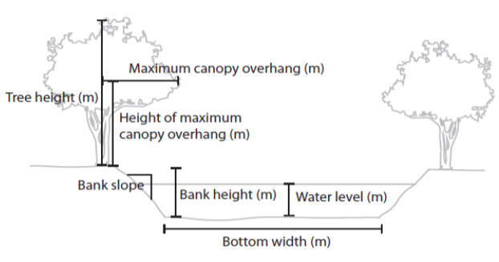

3. Using stream_light
Phil Savoy
3/13/2026
Source:vignettes/3 Using stream_light.Rmd
3 Using stream_light.RmdIntroduction
This article will demonstrate creating estimates of photosynthetically active radiation (PAR) using the stream_light function. The details and application of this model are detailed in Savoy et al. (2021).
Outline
- Overview: General overview of the function structure.
- Preparing a driver file: Assembling timeseries of model drivers to be fed into the model.
- Preparing a parameter file: Creating a parameter file that describes various site conditions.
- Running stream_light: Example code of how to run the model.
1. Introduction to the stream_light function
First, let’s take a look at the stream_light function which has the following structure:
stream_light(driver_file, Lat, Lon, channel_azimuth, bottom_width, BH, BS, WL, TH, overhang_height, x_LAD)
- driver_file The model driver file
- Lat The site latitude
- Lon The site longitude
- channel_azimuth Channel azimuth
- bottom_width Bottom width (m)
- BH Bank height (m)
- BS Bank slope
- WL Water level (m)
- TH Tree height (m)
- overhang Maximum canopy overhang (m)
- overhang_height Height of the maximum canopy overhang (m). If overhang_height = NA, then the model defaults to a value of 75% of tree height.
- x_LAD Leaf angle distribution, default = 1
Running stream_light model requires a parameter file that describes various site characteristics and a driver file that contains inputs into the model. The first argument for the function (driver_file) is a standardized model driver file that contains total incoming irradiance (W m-2) and leaf area index (LAI) (m2 m-2) which are used as model inputs. The remaining arguments in the function are parameters that describe site characteristics. On the surface this seems like a large number of parameters;however, this tutorial provides more indepth information on each of these parameters and some simplifying assumptions that can be used to reduce the number of necessary parameters.
2. Preparing a driver file
There are two necessary components to drive stream_light. First, incoming above canopy total irradiance (W m-2) is needed as an input into the radiative transfer model. Second, daily estimates of LAI are needed to determine the attenuation of light by canopies within the radiative transfer model. A set of functions is included in the StreamLightUtils package to help create a standardized model driver file.
The structure of the model driver is as follows:
- “local_time”: A POSIXct object in local time
- “offset”: The UTC offset for local time (hours), used in the solar_c function
- “jday”: A unique identifier for each day that combines year and day of year information in the format YYYYddd
- “DOY”: The day of year (1-365 or 366 for leap years)
- “Hour”: Hour of the day (0-23)
- “SW_inc”: Total incoming downwelling shortwave radiation (W m-2). StreamLightUtils provides tools to get hourly data from NLDAS.
- “LAI”: MODIS leaf area index (m2 m-2). StreamLightUtils provides tools to generate interpolated to daily values using the AppEEARS_proc function.
A driver file with the same structure as above can be made using the make_driver function from StreamLightUtils which has the following structure:
make_driver(site_locs, NLDAS_processed, MOD_processed, write_output, save_dir)
- site_locs A table with Site_ID, Lat, and Lon, and the coordinate reference system designated as an EPSG code. For example, the most common geographic system is WGS84 and its EPSG code is 4326
- nldas_prepped Output from the nldas_prep function (from StreamLightUtils)
- modis_prepped Output from the appeears_prep function (from StreamLightUtils)
- write_output Logical value to indicate whether to write each individual driver file to disk. Default value is FALSE.
- save_dir Optional parameter when write_output = TRUE. The save directory for files to be placed in. For example, “C:/
Let’s take a moment to examine the final structure of the driver file
3. Preparing a parameter file
There are several site parameters required to run stream_light; however, not all of these parameters have built in functions within StreamLightUtils. Similarly, not all parameters are easily obtained nor will they all have equal importance for model performance. Here, we detail the same process used to extract parameter values from Savoy et al. (2021). To begin with, let’s revisit the parameters used:

- Lat The site latitude
- Lon The site longitude
- channel_azimuth Channel azimuth
- bottom_width Bottom width (m)
- BH Bank height (m)
- BS Bank slope
- WL Water level (m)
- TH Tree height (m)
- overhang Maximum canopy overhang (m)
- overhang_height Height of the maximum canopy overhang (m)
- x_LAD Leaf angle distribution
To run the model on multiple sites it is easiest to construct a table of parameters for each site such as the following example.
Parameter descriptions and values
Channel azimuth (channel_azimuth)
Currently there is no functionality to derive stream azimuth within StreamLightUtils. In the meantime, these can be derived manually using aerial photographs, flowlines, or field derived measurements. Because we have based our model on SHADE2 (Li et al., 2012), we follow their conventions where stream azimuth is measured clockwise from North (see figure below). However, at present both banks are parameterized identically in StreamLight (e.g. only a single tree height is put in instead of the heights of trees on either bank) and so in reality a channel azimuth of 45\(^\circ\) and 225\(^\circ\) will yield the same results. We only mention this point in case future development may allow for parameterizing banks separately, or in case someone wanted to modify the code on their own to add in this functionality.
Example of deriving azimuth, note the first azimuth of the first example is 45\(^\circ\) whereas the second example is 315\(^\circ\).

Width (bottom_width)
The widths used in this tutorial are from field measurements. However, if field measurements are not available or feasible there are various remotely sensed products such as the NARWidth dataset from Allen & Pavelsky. There are also empirically-derived estimates, such as those from McManamay & DeRolph, 2019.
Bank height (BH)
Without detailed information of bank heights a default value of 0.1m was used for all sites.
Bank slope (BS)
Without detailed information of bank slopes a default value of 100 was used for all sites.
Water level (WL)
Without detailed information of water level a default value of 0.1m was used for all sites.
Tree height (TH)
StreamLightUtils has a built in function to derive tree height using the LiDAR derived estimates of Simard et al. (2011). The function extract_height will retrieve an estimate of tree height (m) based on latitude and longitude and has the following structure:
extract_height(Site_ID, Lat, Lon)
- Site_ID The site identifier (“Site_ID”)
- Lat The site latitude
- Lon The site longitude
- site_crs The coordinate reference system of the points, preferably designated as an EPSG code. For example, the most common geographic system is WGS84 and its EPSG code is 4326.
Although this parameter file already contains tree height, the following is an example of how to use this funciton
#Extract tree height
extract_height(
Site_ID = "NC_NHC",
Lat = 35.9925,
Lon = -79.046,
site_crs = 4326
)
#Or iterate over multiple sites
mapply(
FUN = extract_height,
Site_ID = NC_params[, "Site_ID"],
Lat = NC_params[, "Lat"],
Lon = NC_params[, "Lon"],
site_crs = NC_params[, "epsg_crs"],
simard2011 = simard2011,
SIMPLIFY = TRUE
) |>
t() |>
as.data.frame()Maximum canopy overhang (overhang)
Without detailed information on canopy overhang it was assumed that overhang was 10% of tree height at all sites.
4. Running StreamLight
First time installation of the StreamLight package from GitHub can be done with the devtools library and once installed, the package can be loaded as normal.
devtools::install_github("psavoy/StreamLight")
library("StreamLight")Estimates of average light across a transect can be estimated using the stream_light function which has the following structure:
stream_light(driver_file, Lat, Lon, channel_azimuth, bottom_width, BH, BS, WL, TH, overhang_height, x_LAD)
- driver_file The model driver file
- Lat The site latitude
- Lon The site longitude
- channel_azimuth Channel azimuth
- bottom_width Bottom width (m)
- BH Bank height (m)
- BS Bank slope
- WL Water level (m)
- TH Tree height (m)
- overhang Maximum canopy overhang (m)
- overhang_height Height of the maximum canopy overhang (m). If overhang_height = NA, then the model defaults to a value of 75% of tree height.
- x_LAD Leaf angle distribution, default = 1
As outlined in the previous section on preparing parameter files. In Savoy et al. (2021) we made some simplifying assumptions to facilitate applying this model easily to locations that lacked detailed in situ measurements.
Generate estimates for a single site
To run the model for a single site simply add the parameters to the function.
#Load the example driver file for NC_NHC
data("NC_NHC_driver", package = "StreamLight")
#Run the model
NC_NHC_modeled <- stream_light(
NC_NHC_driver,
Lat = 35.9925,
Lon = -79.0460,
channel_azimuth = 330,
bottom_width = 18.9,
BH = 0.1,
BS = 100,
WL = 0.1,
TH = 23,
overhang = 2.3,
overhang_height = NA,
x_LAD = 1
)Generate estimates for multiple sites
It is also possible to then loop over multiple sites by wrapping the model in another function and below is an example of this that could be adapted to your own workflow.
#Function for batching over multiple sites
batch_model <- function(Site, parameters, read_dir){
#Get the model driver
driver_file <- readRDS(here::here(read_dir, paste0(Site, "_driver.rds")))
#Get model parameters for the site
site_p <- parameters[parameters[, "Site_ID"] == Site, ]
#Run the model
modeled <- stream_light(
driver_file,
Lat = site_p[, "Lat"],
Lon = site_p[, "Lon"],
channel_azimuth = site_p[, "Azimuth"],
bottom_width = site_p[, "Width"],
BH = site_p[, "BH"],
BS = site_p[, "BS"],
WL = site_p[, "WL"],
TH = site_p[, "TH"],
overhang = site_p[, "overhang"],
overhang_height = site_p[, "overhang_height"],
x_LAD = site_p[, "x"]
)
return(modeled)
} #End batch_model
#Running the model
modeled_light <- lapply(
NC_params[, "Site_ID"],
FUN = batch_model,
parameters = NC_params,
read_dir = here::here("output")
)
names(modeled_light) <- NC_params[, "Site_ID"]
#Take a look at the output
data("NC_NHC_predicted", package = "StreamLight")
NC_NHC_predicted[1:2, ]The columns are as follows:
- “local_time”: A POSIXct object in local time
- “offset”: The UTC offset for local time (hours), used in the solar_c function
- “jday”: A unique identifier for each day that combines year and day of year information in the format YYYYddd
- “DOY”: The day of year (1-365 or 366 for leap years)
- “Hour”: Hour of the day (0-23)
- “SW_inc”: Total incoming downwelling shortwave radiation (W m-2). StreamLightUtils provides tools to get hourly data from NLDAS.
- “LAI”: MODIS leaf area index (m2 m-2). StreamLightUtils provides tools to generate interpolated to daily values using the AppEEARS_proc function.
- “PAR_inc”: Incoming PAR above the canopy (\(\mu\)mol m-2 s-1)
- “PAR_bc”: Estimated PAR (\(\mu\)mol m-2 s-1) directly below the canopy
- “veg_shade”: The proportion of the channel crossection that is shaded by riparian vegetation
- “bank_shade”: The proportion of the channel crossection that is shaded by stream banks
- “PAR_stream”: The estimated PAR for the channel cross section (\(\mu\)mol m-2 s-1)